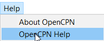

<h1>Help</h1>
<div class="level1">

<p>
<br/>

</p>

<span class='np_break'>&nbsp;</span>
<div class="table sectionedit1"><table class="inline">
	<tr class="row0">
		<td class="col0"> <a href="navigate.html" class="wikilink1" title="opencpn:opencpn_user_manual:menubar:navigate">Navigate</a> </td><td class="col1 leftalign"><a href="view.html" class="wikilink1" title="opencpn:opencpn_user_manual:menubar:view">View</a>  </td><td class="col2"> <a href="ais.html" class="wikilink1" title="opencpn:opencpn_user_manual:menubar:ais">AIS</a> </td><td class="col3 leftalign"> <a href="tools.html" class="wikilink1" title="opencpn:opencpn_user_manual:menubar:tools">Tools</a>   </td><td class="col4"> <span class="curid"><a href="help.html" class="wikilink1" title="opencpn:opencpn_user_manual:menubar:help">Help</a></span> </td>
	</tr>
</table>
<span class='np_break'>&nbsp;</span>
</div>
<p>
<em><a href="../getting_started.html" class="wikilink1" title="opencpn:opencpn_user_manual:getting_started">About Opencpn</a></em><br/>

<em><a href="../getting_started.html#help_faq_opencpn_user_manual" class="wikilink1" title="opencpn:opencpn_user_manual:getting_started">Help</a></em><br/>

</p>

</div>
<!-- EDIT1 TABLE [93-] -->